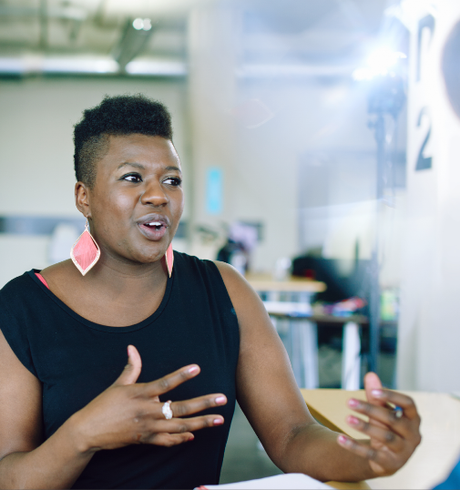

Lekker
bellen met het leukste detacheringsbureau op 0299 - 76 44 46
Inloggen
Lekker
handig
Alles op een rijtje
Lekker bellen
met ons op 0299 - 76 44 46
Joinuz heeft mooie vacatures voor jeugdconsulenten en vertelt je graag meer over deze mooie functie.
Hoe word ik jeugdconsulent?
Welke ervaring moet ik hebben om aan de slag te gaan?
Wat is het salaris van een jeugdconsulent?
Wat zijn de voordelen om me als jeugdconsulent te laten detacheren?
Wat bieden we jou als jeugdconsulent?
Op zoek naar een passende baan als jeugdconsulent?
lekker aan de slag
“De jeugd heeft de toekomst.”
En wat is er mooier dan juist de jeugd te helpen aan een zo goed mogelijke toekomst? Want dat is kortweg
wat een Jeugdconsulent doet, vaak namens een gemeente. Maar als Jeugdconsulent heb je niet zomaar een eenvoudige taak. Vaak heb je namelijk te maken met ingewikkelde gezinssituaties en/of jongeren die tegen problemen aanlopen. Het werk moet dus wel echt bij je passen en je moet de juiste opleiding hebben. Wil je weten of jij uit het juiste hout gesneden bent?
Lees vooral verder, wij vertellen je de ins en outs van deze uitdagende functie.
Wat doet een jeugdconsulent?
Als Jeugdconsulent speel je een belangrijke rol. Je wordt ingeschakeld als een gezin problemen ervaart. Dat kan bijvoorbeeld het geval zijn als ouders uit elkaar gaan, als er sprake is van mishandeling of misbruik, of als er andere problemen voorkomen die een veilige thuissituatie belemmeren. Problemen dus die het gezin zelf niet opgelost krijgt.
Je gaat in gesprek met gezinnen die (complexe) hulpvragen hebben, je stelt de juiste indicatie en weet welke wegen je kunt bewandelen om het gezin te motiveren en stimuleren het probleem aan te pakken. Daarvoor maak je vaak een passend ondersteunings- en familiegroepsplan. Je coördineert de ondersteuning en bekijkt of verdere ondersteuning nodig is voor de jeugdigen in het gezin en voor de andere gezinsleden. Aan het einde van het traject, evalueer je het proces en het bereikte resultaat.


Welke taken heb je als
jeugdconsulent nog meer?
Naast bovenstaande werkzaamheden zorg je er als Jeugdconsulent natuurlijk ook voor dat je op de hoogte bent en blijft van de ontwikkelingen binnen het jeugdbeleid, de jeugdzorg en de gemeente waarin je werkt. Ook hou je goed zicht op het totale jeugdhulpaanbod. Je rapporteert (het verloop van) de hulpvragen en je stelt beschikkingen op.
Wanneer ben je een goede jeugdconsulent?
Er bestaat geen magische formule die bepaalt waaraan een jeugdconsulent moet voldoen, maar een aantal kwaliteiten en eigenschappen kunnen we wel noemen. Zo kan een Jeugdconsulent goed luisteren, situaties goed inschatten en analyseren. Je bent stressbestendig, je staat stevig in je schoenen en je deinst niet terug van een ingewikkelde casus. Natuurlijk kom je er niet zomaar alleen voor te staan. Je gaat werken in een team dat bestaat uit meerdere (junior en senior) Jeugdconsulenten en een gedragswetenschapper, bij wie jij terecht kunt voor lastige kwesties.
Wat doet een jeugdconsulent?
Er zijn verschillende HBO-opleidingen die je voorbereiden op je werk als Jeugdconsulent, zoals Social Work, Pedagogiek en SPH. Daarnaast moet je in het bezit zijn van een SKJ-registratie (of voorregistratie). Het SKJ (Stichting Kwaliteitsregister Jeugd) is het beroepsregister voor professionals die werkzaam zijn in de jeugdzorg. Werk je in de jeugdzorg en heb je direct contact met kinderen en jeugd, dan heb je bijna altijd een SKJ-registratie nodig.
Welke ervaring moet ik hebben om aan de slag te gaan?
Om via Joinuz als Jeugdconsulent aan de slag te kunnen gaan, moet je minimaal 1 jaar ervaring hebben als jeugdconsulent (of jeugd- & gezinscoach, jeugdbeschermer of casusregisseur). Heb je al werkervaring binnen een gemeente? Dan is dat heel mooi meegenomen. Dat verhoogt je kans op een mooie baan namelijk.
Wat is het salaris van een jeugdconsulent?
Hoeveel je gaat verdienen hangt natuurlijk altijd af van je opleiding, ervaring en de organisatie waarvoor je aan de slag gaat. Maar om je een idee te geven: je aanvangssalaris als Jeugdconsulent zal variëren tussen ongeveer €2.750,- en €4.000,- bruto per maand op fulltime basis. Als het zo ver is in je sollicitatieproces, gaan we daar natuurlijk ook over in gesprek met jou en onze opdrachtgever.
Wat zijn de voordelen om me als jeugdconsulent te laten detacheren?
Waarom zou je voor detachering kiezen in een functie als Jeugdconsulent? Je krijgt een contract bij ons, ook al heb je bijvoorbeeld in een jaar tijd meerdere opdrachtgevers voor relatief kortlopende opdrachten. Natuurlijk ontvang je een salaris conform cao, ook als je gedetacheerd wordt. In de meeste gevallen doe je dit werk fulltime, maar er zijn ook mogelijkheden om parttime aan de slag te gaan. Mochten jij en je opdrachtgever dat in de toekomst allebei willen, dan bestaat de mogelijkheid dat je bij hem een vast dienstverband krijgt. Met detacheren heb jij dus én de zekerheid van een vast contract én de flexibiliteit om in korte tijd bij verschillende organisaties ervaring op te doen.
Bekijk onze vacaturesWat bieden we jou als jeugdconsulent?
Natuurlijk weten we nu nog niet hoe je contract er precies uit komt te zien, maar vertrouw erop dat wij graag en goed voor onze mensen zorgen. En dat doen we o.a. hiermee:
Een salaris minimaal conform CAO, jouw opleiding en ervaring
Een kijkje in verschillende gemeentelijke keukens mét de mogelijkheid tot een (vast) contract
Een toffe leaseauto, vroom!
Wij betalen €25 mee aan je sportabonnement, een soort zweetcompensatie dus
Een op maat gemaakt opleidingsprogramma, geheel in jouw straatje
Een reiskostenvergoeding en een pensioenregeling
Toegang tot de Joinuz Academy. Jouw persoonlijke en professionele ontwikkeling staat bij Joinuz namelijk op #1!
Ja, dit wil ik!
Op zoek naar een passende baan als jeugdconsulent?
Ben jij klaar voor een nieuwe rol in een uitdagende omgeving? Wil jij je laten detacheren als Jeugdconsulent? Of wil je uiteindelijk graag een vaste baan vinden in dit vakgebied? Bij Joinuz staan we te trappelen om voor jou aan de slag te gaan. Wij hebben de juiste contacten en een groeiend aantal mooie opdrachtgevers. Heb jij de opleiding, ervaring en het karakter dat past bij hun wensen? Dan gaan wij je helpen om de match compleet te maken in de hoop dat jij snel kunt beginnen!
Heb je bovenstaande vacatures voor Jeugdconsulenten bekeken en staat dé baan die je zoekt er nog niet meteen bij? Maar ben je, net zoals wij, gedreven en enthousiast en wil je het liefst morgen aan de slag? Klim in je pen, duik in je toetsenbord of zwengel je telefoon aan en neem contact met ons op. Dan maken we gewoon alvast kennis en dan gaan wij onze Jeugdconsulentenkrachten hun werk laten doen voor jou. Vul het contactformulier in, stuur ons een mailtje (stuur meteen even je CV mee, dat kunnen we maar vast hebben) of bel, app of sms ons. Wij horen graag van je!
Lekker aan
de slag
oinuz helpt jou maar wat graag aan je nieuwe baan als Jeugdconsulent. Wij zijn altijd op zoek naar nieuw talent en er vallen regelmatig nieuwe opdrachten op onze deurmat van onze opdrachtgevers. Kijk dus snel in ons vacatureoverzicht voor al onze actuele Jeugdconsulent vacatures.
Altijd als 1e op de hoogte van de nieuwste vacatures als je een job alert aanmaakt!